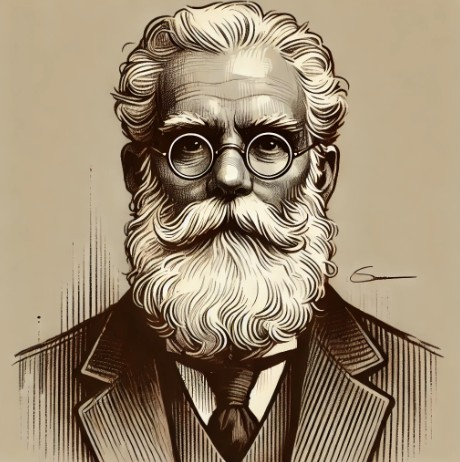

Időtartam: 60 perc Korosztály: 14-99 év Játszható: Laptopról Ár: Ingyenes
Megjelenés: 2025. február 08.
A kezdés előtt érdemes elolvasni a részletes játékbemutatót!

Miklós professzor, miután hosszú éveken át kutatta az ősi legendákat, végre rábukkant egy titkos irásra, amely az eltűnt ereklye hollétét rejtette. A professzor háza, amely valaha a tudományos felfedezések központja volt mára egy titkos akadémiává alakult tele titkos ajtókkal és mechanizmusokkal.
Minden egyes szobában egy-egy bonyolult feladvány várja a kíváncsiakat,
akik meg akarják fejteni a professzor titkait.
Az ereklye a házban rejtőzik, de a helyes nyomokhoz vezető úton számos veszély
leselkedik.
INDULJON A FELFEDEZÉS!
Játékbemutató
Időtartam: 60 perc Korosztály: 14-99 év Játszható: Laptopról Ár: Ingyenes
Megjelenés: 2025. február 08.
A kezdés előtt érdemes elolvasni a részletes játékbemutatót!